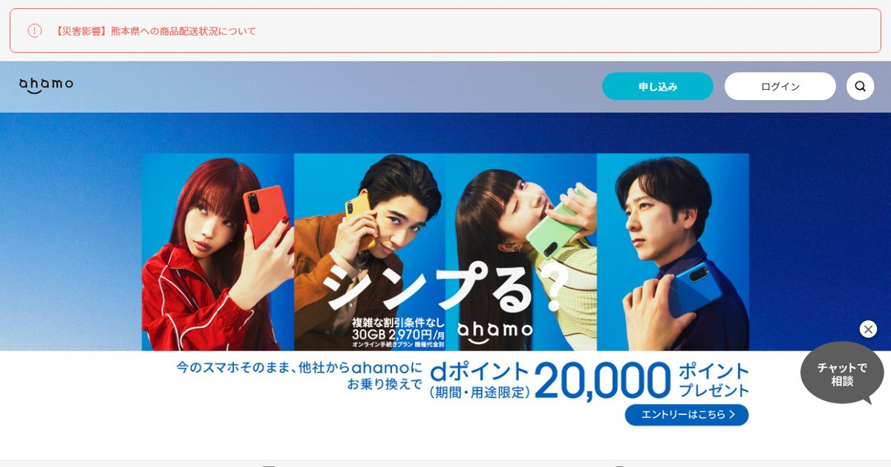
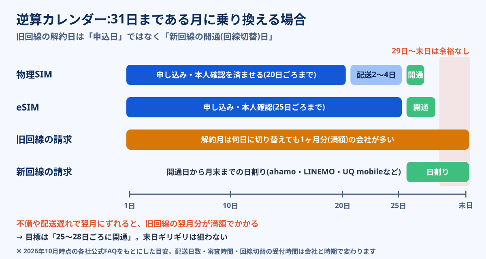

ahamoの公式FAQには、解約月の月額料金は日割りにならず満額、一方で新規契約・MNPで入った月は開通日から月末までの日割りと書かれています。楽天モバイルは解約月を「日割りではなく、解約までのデータ利用量に応じて精算」、ワイモバイルは「一部プランを除き、解約月は日割り計算にはなりません」。会社によって、出ていく月と入ってくる月の数え方がまったく違います。
この違いを知らずに月の10日に乗り換えると、旧回線の1ヶ月分を満額払いながら、新回線の日割り料金も20日分以上重ねて払うことになります。逆に月末ギリギリを狙いすぎて切り替えが翌月にずれると、旧回線の料金がもう1ヶ月分まるごと増えます。この記事では、2026年10月時点の各社公式FAQで確認できた解約月と初月の扱いを11社分の表にまとめ、物理SIMとeSIMで「何日までに申し込めばいいか」を逆算します。乗り換え先そのものの選び方は格安SIMおすすめ比較に分けてあり、ここでは「いつ動くか」に絞ります。
大手キャリア(ドコモ・au・ソフトバンク)やahamo・UQ mobile・LINEMO・IIJmioのように解約月が満額の会社から出ていくなら、月末寄りの乗り換えが得です。乗り換え先のahamo・LINEMO・UQ mobile・IIJmio・mineoは初月が日割りなので、開通が遅いほど初月の支払いは小さくなります。
ただし狙うのは末日ではなく「25〜28日ごろに開通」。旧回線の解約日は申込日ではなく新回線の開通(回線切替)日で決まるため、本人確認の不備や配送の遅れで翌月にずれると、旧回線の料金が1ヶ月分満額で増えます。物理SIMなら20日ごろ、eSIMなら25日ごろまでに申し込むのが目安です。例外は2つで、ソフトバンクの請求締日が10日・20日の人は「月末」ではなく自分の締日の直前、解約月が日割りになるmineoから出ていく人はタイミングをほぼ気にしなくてよい、です。
ahamoの料金プランを見る公式サイトへ →PR・初月の日割りと契約条件を申し込み前に確認できます


乗り換え先がまだ決まっていない人へ
スマホ代は自宅の回線とのセット割で最適解が入れ替わります。自宅側の候補も一緒に出しておくと、SIMの選択肢を絞りやすくなります。
損得を決めるのは「出ていく月」と「入る月」の2つ
乗り換えのタイミングでよく聞く「月末がいい」という話は、半分だけ正しい説明です。実際には、次の2つの組み合わせで答えが変わります。
- 出ていく会社(旧回線)の解約月:何日に解約しても1ヶ月分を満額で請求するのか、解約日までの日割りなのか
- 入る会社(新回線)の初月:開通日から月末までの日割りなのか、日割りなしの固定額なのか。データ量は満額もらえるのか、日割りで減るのか
そしてもう1つ、多くの人が見落としているのが「解約日がいつになるか」です。MNP(番号そのまま乗り換え)では、旧回線に解約の電話をする必要はなく、新回線の開通手続き(回線切替)が完了した時点で旧回線が自動的に解約されます。つまり、25日に申し込んでも、SIMカードの到着と開通が翌月1日になれば、旧回線の解約日は翌月1日です。月末を狙う人ほど、この「申込日と解約日のずれ」で失敗します。
MNPの手続き自体は、2023年5月に始まったMNPワンストップに対応する会社同士なら、予約番号を取らずに乗り換え先へ申し込むだけで済みます。対応していない会社や店頭で申し込む場合は、今もMNP予約番号が必要です。予約番号の有効期限は取得日を含めて15日間で、ahamoのように申込時点で残り10日以上を求める会社もあります。手続きの流れはMNPワンストップの使い方で詳しく解説しています。
11社の解約月・初月の扱い一覧
各社の公式FAQ・公式ページで確認できた内容を、「出ていくとき(解約月)」と「入るとき(初月)」に分けて並べました。左の列が「満額」の会社から出ていくなら月末寄りが得、右の列が「日割り」の会社に入るなら開通が遅いほど初月が安くなります。
| 会社 | 出ていくとき(解約月の月額) | 入るとき(初月の月額) | 補足 |
|---|---|---|---|
| ドコモ(eximo・irumoなど) | 満額(日割りなし) | - | 解約と同時に、みんなドコモ割・光セット割などの割引も終了 |
| au | 満額(日割りなし) | - | MNP転出手数料は無料 |
| ソフトバンク | 満額(日割りなし) | - | 請求締日が10日・20日・末日の3種類。My SoftBankの料金確認で確認できる |
| ahamo | 満額(初月に解約しても満額) | 日割り。30GBのデータ量は日割りされない | MNP予約番号は残り10日以上が必要 |
| LINEMO | 満額(日割りなし) | 日割り。データ量は初月から満量 | ソフトバンク・ワイモバイルからは番号移行の扱い |
| UQ mobile | 満額(日割りなし) | 日割り(契約当日から適用) | オプションの扱いは公式FAQで個別に確認 |
| ワイモバイル | 満額(一部プランを除く) | 公式FAQで確認 | Web手続きは20時以降の申込が翌日扱い |
| 楽天モバイル | 日割りではなく、解約までのデータ利用量で精算 | 日割りではなく、データ利用量の段階制(3GBまで1,078円) | 一部の月額オプションは解約日までの日割り |
| povo2.0 | 基本料0円のため影響は小さい | 基本料0円 | 購入済みトッピングの有効期限に注意 |
| IIJmio | 満額(日割りなし) | 日割り。データ量も日割りで付与 | MNP予約番号は残り7日以上が必要(Web申込) |
| mineo | 日割り(課金開始の翌月末までの解約は満額) | 日割り。データ量は全量 | 出ていくときも入るときもタイミングの影響が小さい |
※ 2026年10月時点で各社の公式FAQ・公式ページ・公式コラムに記載の内容をもとにした目安。税込。「-」は本記事で乗り換え先として扱わない会社です。料金プランや契約時期によって扱いが異なる場合があるため、手続き前に契約中のプランの条件を公式で確認してください。
表を見ると、「出ていくときは満額、入るときは日割り」の会社が多数派だとわかります。だからこそ「月末がいい」という通説が生まれたわけです。例外の楽天モバイルは、どちらの向きでも「日数」ではなく「使ったデータ量」で料金が決まる仕組みなので、月の途中で乗り換えても、その月に使ったデータが3GB以内なら1,078円で済みます。楽天モバイルの電波や向き不向きは楽天モバイルの電波はつながる?で整理しています。
4パターン判定:あなたの乗り換えはいつが得か
ここがこの記事の中心です。「旧回線の解約月は満額か日割りか」と「新回線の初月は日割りか固定か」の2つで、損の少ないタイミングは次の4パターンに分かれます。
| 旧回線の解約月 × 新回線の初月 | おすすめの開通日 | 該当する例 |
|---|---|---|
| ① 満額 × 日割り | 25〜28日ごろ(月末寄り) | ドコモ・au・ソフトバンク → ahamo・LINEMO・UQ mobile・IIJmio・mineo |
| ② 満額 × 日割りなし(データ量制・固定額) | 月末寄り。ただし新回線の初月の使い方で調整 | 大手キャリア → 楽天モバイル |
| ③ 日割り × 日割り | いつでもほぼ同じ。思い立った日でよい | mineo → ahamo・LINEMOなど |
| ④ 日割り × 日割りなし | 月初寄り(新回線を1ヶ月まるごと使う) | mineo → 楽天モバイル |
※ 料金の扱いは2026年10月時点の各社公式FAQをもとにした目安です。mineoは課金開始の翌月末までに解約すると解約月が満額になるため、契約直後の乗り換えは①または②として考えてください。
②の楽天モバイルは少し特殊です。月末に開通すると、数日しか使わなくても最低1,078円(3GBまで)がかかりますが、その数日で3GBを超えることはまずないので、損は1,078円程度にとどまります。逆に月の前半に開通して大容量を使うと、その月の料金が上の段階に上がります。「旧回線の満額」と「楽天の初月の段階」の両方を見て、月末寄りを基本に考えるのが無難です。
一方、④のように旧回線が日割りで新回線が固定額なら、新回線を1日から使い始めるほうが、同じ料金でまる1ヶ月使えます。ただ、このパターンに当てはまる人は多くありません。大半の人は①なので、まずは「25〜28日ごろに開通」を目標に置いてください。
- ahamo・LINEMO・mineo:初月の料金は日割りでも、データ量は満量(全量)。月末に開通すると、数日分の料金で1ヶ月分のデータが使える
- IIJmio:料金もデータ量も日割り。月末に開通すると、初月のデータ量はわずかになる
旧回線のデータを月末まで使い切り、新回線の初月データで数日をつなぐ、という使い方ができるのは前者のタイプです。
計算例:10日・20日・28日・翌月1日で比べる
具体的な数字で見てみます。月額7,000円の大手キャリアのプラン(計算用の仮の金額)から、ahamo(30GB・月額2,970円、初月は開通日から月末までの日割り)へ、31日まである10月に乗り換える場合です。10月と11月の2ヶ月分の合計で比べます。
| 開通(回線切替)日 | 10月の旧回線 | 10月のahamo(日割り) | 11月 | 2ヶ月の合計 |
|---|---|---|---|---|
| 10月10日 | 7,000円(満額) | 約2,108円(22日分) | ahamo 2,970円 | 約12,078円 |
| 10月20日 | 7,000円(満額) | 約1,150円(12日分) | ahamo 2,970円 | 約11,120円 |
| 10月28日 | 7,000円(満額) | 約383円(4日分) | ahamo 2,970円 | 約10,353円 |
| 11月1日(ずれた) | 7,000円(満額) | 0円 | 旧回線 7,000円(満額)+ahamo 2,970円 | 約16,970円 |
※ 日割りは「月額÷その月の日数×開通日を含む月末までの日数」で計算した概算で、実際の端数処理は各社の規定によります。旧回線の7,000円は計算用の仮の金額で、通話料・端末代・オプションは含めていません。2026年10月時点のahamo公式FAQの条件をもとにしています。
10日と28日の差は約1,700円。月額が高いプランから出ていく人ほど差は大きくなりますが、それでも「数千円の範囲」です。それに対して、28日のつもりが11月1日にずれると、28日に間に合った場合より約6,600円多く払うことになります。月末寄せで得られる金額より、翌月にずれたときの損のほうがずっと大きいということです。
この非対称性が、「末日ギリギリではなく25〜28日ごろ」をすすめる理由です。数百円を取りにいって数千円を失うリスクを取る必要はありません。
逆算カレンダー:何日までに申し込むか
開通日を25〜28日ごろに置くとして、申し込みはいつまでにすればいいのか。物理SIMとeSIMで逆算すると、次のようになります。

-
〜15日ごろ:旧回線の契約内容を確認する
端末代の分割残り・家族割の親回線かどうか・光回線とのセット割・キャリアメールの利用状況を確認します。ソフトバンクの人は、ここで請求締日も見ておきます。MNPワンストップ非対応の組み合わせなら、予約番号の取得もこの段階です(有効期限は取得日を含めて15日間)。
-
物理SIM:20日ごろまでに申し込む
本人確認書類のアップロードと審査に1〜数日、SIMカードの配送に2〜4日ほどかかるのが一般的です。書類の不備で再提出になると、さらに数日延びます。20日ごろに申し込めば、不備が1回あっても月内に開通できる余裕が残ります。
-
eSIM:25日ごろまでに申し込む
配送がないぶん早く、審査が通れば当日〜翌日に開通できることも多くあります。ただし審査は混雑や書類の内容で延びることがあり、開通操作には端末側の設定も必要です。初めてのeSIMなら、eSIMへの乗り換え手順を先に読んでおくと当日あわてません。
-
25〜28日ごろ:開通手続き(回線切替)をする
この操作が完了した時点で旧回線が解約されます。回線切替には受付時間がある会社が多く、ahamoの場合は午前9時〜午後9時です。受付時間外の操作は翌日扱いになるため、月末日の夜に切り替えようとすると、翌月扱いになることがあります。
-
開通後:旧回線の最終請求と新回線の初月を確認する
翌月の明細で、旧回線の請求が解約月の1ヶ月分で止まっているか、新回線の初月が日割りになっているかを確認します。端末の分割残りは解約後も請求が続くので、残りの回数もここで確認しておきます。
- 本人確認書類の住所と契約住所が違う:引越し後に免許証の住所を変えていないと、審査で止まります
- 月末は申込が集中する:審査や配送に普段より時間がかかることがあります
- ワイモバイルのWeb手続きは20時以降が翌日扱い:末日の20時以降は翌月の手続きになります
- MNP予約番号の残り日数が足りない:取得から日数がたつと、乗り換え先の条件(ahamoは10日以上、IIJmioは7日以上)を満たせず、取り直しになります
ahamoは初月の月額が開通日からの日割りで、30GBのデータ量は日割りされません。25〜28日ごろに開通すれば、数百円の初月料金で月末まで30GBが使え、旧回線のデータを使い切ってから乗り換えられます。5分かけ放題も月額に含まれています。手続きがオンライン限定である点は、事前に納得しておく必要があります。
ahamoの料金プランを見る初月の日割りと30GBの条件を確認できます※ 広告(PR)。料金・条件は2026年10月時点の公式FAQの記載をもとにしています。最新の条件は公式サイトで確認してください。
ソフトバンクの「締日が20日」の人は月末ではない
「月末に乗り換えるのが得」という話は、請求が毎月1日〜末日で区切られていることが前提です。ソフトバンクには請求締日が10日・20日・末日の3種類があり、締日が10日なら「前月11日〜当月10日」、20日なら「前月21日〜当月20日」が1回分の請求期間になります。締日は契約時期などで決まっており、My SoftBankの料金確認画面に表示される「請求締日」で確認できます。
| 請求締日 | 1回分の請求期間 | 損の少ない乗り換えの目安 |
|---|---|---|
| 末日 | 当月1日〜末日 | 25〜28日ごろに開通 |
| 20日 | 前月21日〜当月20日 | 15〜18日ごろに開通(締日の数日前) |
| 10日 | 前月11日〜当月10日 | 5〜8日ごろに開通(締日の数日前) |
※ 請求期間は2026年10月時点でソフトバンクの請求締日について公開されている情報をもとにした目安。解約月の料金は日割りされず、解約日を含む請求期間の料金が満額で請求されるという考え方で整理しています。正確な扱いはMy SoftBankやサポート窓口で確認してください。
締日が20日の人が「月末がいい」と聞いて25日に乗り換えると、21日から始まった新しい請求期間の料金を満額払うことになり、むしろ損な日を選んでしまいます。「月末」ではなく「自分の請求期間の終わりの数日前」と覚えておけば、締日がどこでも同じ考え方で判断できます。乗り換え先の初月は暦の月で日割りされることが多いため、締日が20日の人は、新回線側の初月は少し多めに払う形になります。それでも旧回線を満額で1期間多く払うよりは小さく済むケースが多いです。
ソフトバンクからLINEMOやワイモバイルへ移る場合は、他社への乗り換えではなく番号移行の扱いになるため、締日や料金の切り替わり方が通常のMNPと異なることがあります。LINEMOへの移行の流れはLINEMOへの乗り換えガイドで扱っています。
日割り以外でタイミングを左右する5つのこと
日割りの差は多くても数千円です。それより大きなお金が動く要素が、別のところにあることも少なくありません。乗り換え日を決める前に、次の5つを確認してください。
| 確認すること | タイミングへの影響 | どう動くか |
|---|---|---|
| 端末の返却プログラム | ドコモの「いつでもカエドキプログラム」などは、所定の時期に端末を返すと残りの支払いが不要になる仕組み。時期を外すと負担が増えることがある | 返却の条件と期限を先に確認し、乗り換え日をそれに合わせる |
| 光回線・でんきとのセット割 | スマホを解約すると、自宅の光回線のセット割(ドコモ光セット割・auスマートバリュー・おうち割 光セットなど)も対象外になる | 光回線もまとめて見直すか、家族の回線で割引が続くかを確認 |
| 家族割の親回線 | 親回線が抜けると、家族の割引や請求のまとめ方が変わることがある | 親回線の変更が必要か、手続き前にキャリアで確認 |
| キャリアメール | 解約と同時に使えなくなる。各社の持ち運びサービス(有料)は解約から一定期間内の申込が条件 | ログインに使っているサービスのメールアドレスを先に変更 |
| 乗り換え先のキャンペーン期限 | 「◯月末までの申込」が条件の特典は、締め切り日が優先になる | 特典の条件(申込日か開通日か)を確認してから日程を決める |
※ 2026年10月時点の各社公式ページの記載をもとにした一般的な傾向です。対象条件は契約内容によって異なります。
特にセット割は見落としやすく、スマホを格安SIMに変えたら自宅の光回線の割引が毎月1,000円前後消えた、ということが起こります。スマホ代と光回線をまとめて見直す考え方はスマホ料金の見直し手順と光回線おすすめ比較で扱っています。乗り換えて後悔しやすい点は格安SIMで後悔する人の共通点にまとめました。
なお、MNP転出手数料は主要各社で無料になっており、2019年10月以降の新しい料金プランでは、大手キャリアでも契約期間の縛りや高額な解約金がないプランが中心です。古い2年契約のプランを使い続けている人は、更新月以外に解約すると解約金がかかる場合があるため、契約内容を確認しておくと安心です。
よくある質問
月末の何日までに申し込めば、その月のうちに乗り換えられますか?
月初(1日)に乗り換えるのは損ですか?
ソフトバンクの請求締日が20日です。いつ乗り換えるのがいいですか?
格安SIMから格安SIMへの乗り換えでもタイミングは関係ありますか?
月末に乗り換えると、新しい回線の初月のデータ量は少なくなりますか?
まとめ:狙うのは「25〜28日ごろに開通」
- 大手キャリアやahamo・UQ mobile・LINEMO・IIJmioは解約月が満額。乗り換え先の多くは初月が日割りなので、月末寄りの開通が得
- 旧回線の解約日は申込日ではなく、新回線の開通(回線切替)日
- 月末寄せで得られるのは数百〜千円台、翌月にずれたときの損は旧回線の1ヶ月分。だから末日ではなく25〜28日ごろを狙う
- 申し込みの目安は物理SIMで20日ごろ、eSIMで25日ごろ
- ソフトバンクの請求締日が10日・20日の人は、月末ではなく締日の数日前。mineoから出ていく人はタイミングをほぼ気にしなくてよい
- 日割りより大きなお金が動く端末の返却時期・セット割・キャンペーン期限を先に確認する
乗り換え先の候補は、使うデータ量と通話の多さから格安SIMおすすめ比較で絞り込めます。MNPワンストップで予約番号なしに手続きする流れはMNPワンストップの使い方を参考にしてください。
- ahamo よくあるご質問(FAQ)「日割り」に関する回答(契約初月・解約月・データ量の扱い)(2026年10月確認)
- ahamo 公式コラム「MNP予約番号の有効期限はどれくらい?」(有効期限15日間・ahamoは残り10日以上が必要・MNPワンストップ)(2026年10月確認)
- 楽天モバイル よくある質問「Rakuten最強プランを解約した場合、解約月のプラン料金の請求金額は日割りになりますか?」(2026年10月確認)
- Y!mobile「解約・MNP転出前に確認したい料金見直し」(解約月の日割り・予約番号の有効期間・Web受付時間)(2026年10月確認)
- UQ mobile よくあるご質問「新規契約した初月の請求について知りたい」「月途中で解約する場合、料金は日割りになりますか?」(2026年10月確認)
- LINEMO よくある質問(契約初月・解約月の料金、データ量の付与)(2026年10月確認)
- IIJmio 料金・仕様(利用開始月・解約月の月額料金とデータ量)、IIJ「MNP転入(転出)」(予約番号の残り日数)(2026年10月確認)
- mineoユーザーサポート よくあるご質問(課金開始月・解約月の月額基本料金)(2026年10月確認)
- NTTドコモ「eximo」「irumo」料金ページ・注意事項(解約月の扱い・解約時に終了する割引)(2026年10月確認)
- ソフトバンク My SoftBank 料金確認(請求締日)に関する公開情報(2026年10月確認)
- 総務省 MNP(携帯電話番号ポータビリティ)に関する公表資料(MNPワンストップ方式・転出手数料)
- 各社の料金・条件はプランや契約時期によって異なります。手続き前に各社公式サイトで最新情報を確認してください